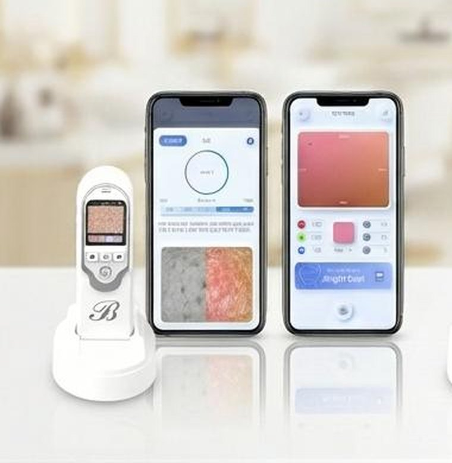

홈›솔루션›3-in-1 뷰티 케어
BEAUTY
3-in-1 뷰티 케어
피부 · 피부톤 · 두피 촬영을 하나의 광학 기기에 담았습니다.
모바일 · PC 앱으로 촬영 이미지를 분석하고, 회원별 맞춤 제품과 관리 가이드를 제안합니다.
 벨루스 디바이스 · 앱
벨루스 디바이스 · 앱피부 · 피부톤 · 두피 촬영을 하나의 광학 기기에 담았습니다.
모바일 · PC 앱으로 촬영 이미지를 분석하고, 회원별 맞춤 제품과 관리 가이드를 제안합니다.
벨루스 디바이스 · 앱이마 · 눈가 · 볼 등 부위별로 촬영하고 항목마다 1~5단계로 평가합니다. 종합 결과에서는 피부 타입과 피부 나이를 함께 알려 줍니다.
온디바이스 AI가 촬영 이미지와 센서값을 함께 읽어 고객의 피부를 일곱 가지 항목으로 풀어냅니다. 가장 먼저 챙길 항목은 키워드로 표시되고, 같은 연령대 평균과 비교해 고객이 자기 피부를 한눈에 이해합니다.
세 부위의 피부색을 촬영해 밝기와 웜 · 쿨 축으로 분류합니다. 동양인 · 서양인 기준을 선택할 수 있습니다.
조명이나 화장에 좌우되지 않는 측정값으로 퍼스널 톤을 정하고, 톤마다 어울리는 헤어 · 아이섀도 · 립 · 네일 컬러를 바로 제안합니다. 색조 제품을 톤별로 등록해 두면 그 자리에서 추천으로 이어집니다.
같은 기기로 두피를 고배율 촬영해 모발과 두피 상태를 측정하고, 정수리 사진으로 탈모 유형을 분류합니다.
두피 타입과 모발 밀도 · 굵기, 두피 나이를 함께 보여 주고, 탈모는 유형과 진행 단계로 나눠 남녀별 가이드를 제공합니다. 측정이 쌓일수록 두피 & 모발 건강 추이가 그래프로 이어집니다.
피부 · 피부톤 · 두피 분석 결과는 항목별 단계와 타입으로 수치화됩니다. 브랜드 제품을 태그와 함께 등록해 두면, 추천 알고리즘이 결과에 맞는 제품을 골라 구매 링크와 함께 보여 줍니다. 매니저가 할 일은 촬영뿐입니다.
브랜드 · 제품명 · 용량 · 설명 · 사진 · 구매 링크를 넣고, 수분 · 모공 · 탈모 · 쿨 브라이트처럼 결과와 연결할 태그를 고릅니다. 엑셀로 카탈로그를 한 번에 올릴 수도 있습니다.
매니저가 고객을 촬영하면 온디바이스 AI가 항목별 1~5단계, 피부 타입, 퍼스널 톤, 두피 타입과 탈모 단계를 산출합니다. 판단은 기기가 하므로 누가 상담해도 결과가 같습니다.
수치에 해당하는 태그의 제품만 추천됩니다. 수분이 부족한 고객에게는 수분 태그 제품이, 웜 다크 톤 고객에게는 그 톤의 베이스 · 립 제품이 "구매하러 가기" 버튼과 함께 보입니다.
제품 하나에 여러 태그를 붙일 수 있고, 성별 타깃도 정할 수 있습니다.
별도 시스템 없이 전용 앱 하나로 회원 관리부터 리포트, 데이터 추출까지 처리합니다.
분석에서 케어까지, 일상에 스며드는 AI 제품.

AI 피부 · 두피 분석전용 디바이스와 DERMA READER 앱으로 피부 · 피부톤 · 두피를 분석하고, 회원별 이력과 맞춤 제품 추천, PDF 리포트를 지원합니다.
 의료기관용 두피 · 모발 분석
의료기관용 두피 · 모발 분석탈모 · 두피 유형 · 모발 밀도 · 모발 굵기를 정밀 분석해 의료기관에 제공하는 전문 분석 솔루션입니다. 다양한 배율의 렌즈로 세부 부위를 확인하고, 성별 · 연령대를 반영한 리포트를 제공합니다.
화장품 브랜드 · 유통사 · 뷰티테크 파트너십 문의를 환영합니다.